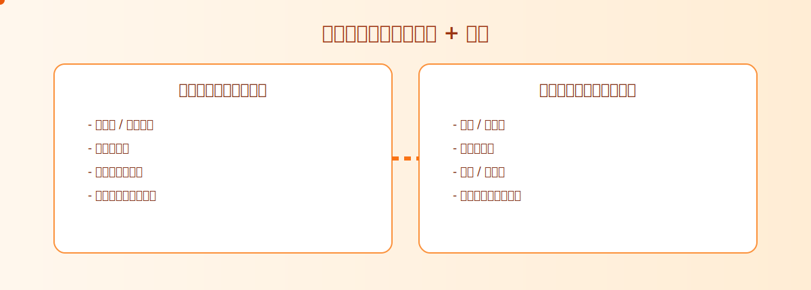

📋 您将学到什么
- 如何为图片相册生成二维码
- 为品牌和营销自定义二维码
- 二维码放置和尺寸的最佳实践
- 使用二维码进行移动优先的图片分享
- 追踪二维码性能和分析
什么是二维码，为什么要用于图片分享？
二维码（快速响应码）是可以存储各种信息的二维条形码，包括指向您图片相册的URL。在图片分享方面，二维码提供了几个独特的优势：
- 移动优先分享：非常适合智能手机用户，可以即时扫描和访问图片
- 线下到线上的桥梁：在印刷材料中包含二维码以推动数字参与
- 专业外观：分享图片相册的干净、现代方式
- 便捷访问：无需输入长URL或记住复杂链接
- 可追踪参与：监控有多少人扫描了您的二维码
📱
二维码示例
扫描即可立即访问图片相册
创建图片二维码的分步指南
2配置相册设置
设置您的图片相册参数：
- 查看限制：相册可以被访问的次数
- 时间控制：每个查看者可以在相册中停留的时间
- 描述：添加有意义的标题或描述
3生成二维码
点击"创建链接和二维码"自动生成：
- 可分享的相册链接
- 高质量的二维码图片
- 分析追踪代码
4下载和使用
您的二维码已准备就绪：
- 右键保存二维码图片
- 用于印刷材料、名片或数字媒体
- 在社交媒体平台上分享二维码
图片二维码最佳实践
尺寸和放置
- 最小尺寸：至少2cm x 2cm以确保可靠扫描
- 对比度：确保二维码与背景之间有高对比度
- 留白空间：在二维码周围留出白色空间（静区）
- 视线水平放置：将二维码放在容易扫描的位置
设计考虑
- 保持简单：避免干扰扫描的复杂背景
- 印刷前测试：始终在多个设备上测试二维码
- 包含说明：在二维码附近添加"扫描查看图片"文本
- 品牌一致性：使用与品牌匹配的颜色，同时保持可扫描性
图片二维码的创意用例
摄影师
- 婚礼相册：在感谢卡中包含二维码，便于照片访问
- 活动摄影：在活动现场展示二维码进行即时照片分享
- 作品集分享：在名片上添加二维码访问作品集
- 印刷展览：让访客访问高分辨率版本
企业
- 产品目录：将印刷材料链接到详细的产品图片
- 房地产：在房产传单上包含二维码进行照片导览
- 餐厅：即时分享食物照片和菜单项目
- 贸易展览：无需物理手册即可提供产品相册
个人使用
- 家庭聚会：与所有参与者分享活动照片
- 旅行回忆：为度假照片相册创建二维码
- 社交活动：让客人轻松访问派对照片
- 教育项目：在演示中包含视觉内容
高级二维码功能
分析和追踪
MaiIMG为您的二维码提供详细分析：
- 扫描次数：追踪您的二维码被扫描的次数
- 设备信息：查看人们使用什么设备扫描
- 时间追踪：监控扫描发生的时间
- 地理数据：了解您的受众位置
安全功能
- 查看限制：控制有多少人可以访问您的图片
- 时间限制：为相册访问设置过期日期
- 访问日志：监控谁在何时访问了您的图片
- 安全托管：图片通过HTTPS加密安全存储
💡 专业提示
对于营销活动，为同一相册创建多个带有不同追踪代码的二维码。这允许您测量不同营销渠道的效果并相应优化您的策略。
技术规格
二维码技术细节
- 错误纠正：中等级别(M) - 可承受高达15%的损坏
- 数据容量：为URL存储优化，采用高效编码
- 格式：适合印刷和数字使用的高分辨率PNG图片
- 兼容性：与所有标准二维码阅读器和智能手机相机兼容
支持的设备和应用
- iOS设备：内置相机应用（iOS 11+）
- Android设备：Google Lens、相机应用和二维码扫描器
- 第三方应用：与所有主要二维码扫描应用兼容
- 网络浏览器：某些浏览器直接支持二维码扫描
二维码优化技巧
印刷材料
- 可能时使用矢量格式以提高可扩展性
- 大量生产前在实际尺寸测试印刷质量
- 考虑纸张质量和印刷方法
- 包含备用文本和URL以提高可访问性
数字使用
- 在不失去可扫描性的情况下优化网络文件大小
- 为可访问性使用适当的alt文本
- 确保二维码在各种屏幕尺寸上正常工作
- 在不同设备和光照条件下测试
相关文章
📚 探索更多图片分享指南
- 婚礼照片分享指南 - 学习如何专业地分享婚礼照片
- 生日会照片分享指南 - 轻松分享生日会精彩瞬间
- 电商产品照片分享指南 - 通过有效的产品照片分享提升销量
- 摄影师作品集分享指南 - 有效展示您的摄影作品
- 设计师作品集分享指南 - 展示您的设计才华
- 图片分享最佳实践 - 掌握图片分享的基本原理
二维码流程图（SVG）
这两张图适合放在活动执行手册或运营 SOP 中，帮助团队对齐分发动作。


总结
二维码代表了现代图片分享的完美解决方案，将移动技术的便利性与传统分享方法的可靠性相结合。无论您是专业摄影师、企业主还是普通用户，二维码都能显著增强您分享和分发视觉内容的方式。
通过遵循本指南中概述的最佳实践，您将能够创建有效、可扫描的二维码，为您的图片相册提供无缝访问，同时保持您所需的安全性和控制。